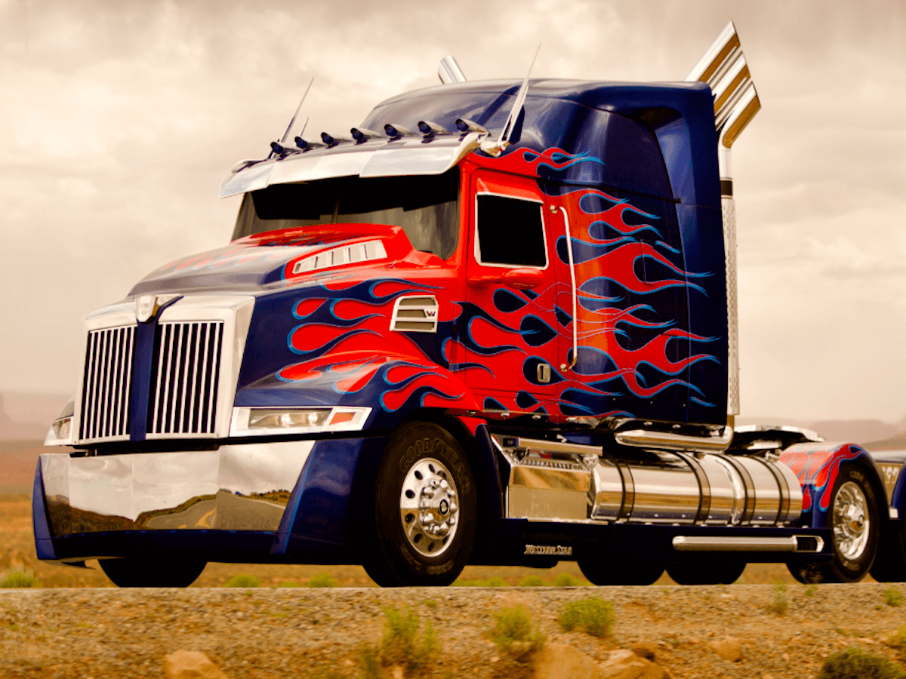

B1G Geoportal
Hello!
It's super nice to be here.
Warning!

My Background
UI · Reshelving · 1996-1998
U of I · BibApp · 2006-2010

BibApp

BibApp
- UW Online Bibliography
- Colophon
- Ruby on Rails
- Apache Solr

UW · Web Dev · 2006-2013
UW Forward
UW Forward
- UW System Library Catalog
- 9.5M+ Records
- MARC
- MODS
- Dublin Core
- Colophon
- Ruby on Rails
- Apache Solr
- Blacklight
- Bootstrap

UMN · Web Arch. & UX Analyst · 2013+
UMN Libraries

B1G Geoportal

Development Path
- Solr (Search/Datastore)
- Ruby on Rails (Web Framework)
- Blacklight (Discovery Layer)
- Geoblacklight (Geo Discovery Layer)
- Local Customizations (CSS, JS, HTML, Ruby)
- B1G Geoportal
Solr > Blacklight
Solr > Blacklight
Solr > BL > GBL
Solr > BL > GBL

Solr > BL > GBL > B1G
Three Projects in One

Balance
Customizations
Simple - Look & Feel
Simple - Look & Feel
Design Goals
- Follow BTAA branding guidelines
- Reusable styles for site and blog
- Ease of maintainablity
Simple - Look & Feel - CSS
Simple - Look & Feel - Results
Moderate - Map Clusters

Moderate - Map Clusters
Moderate - Map Clusters
Design Goals
- Help the map "speak"
- Make the map visually engaging
- Allow the map to inform
- Collection strengths
- Highlight empty result areas
Moderate - Map Clusters
Implementation
- Add Leaflet Clustering Plugin (JS)
- Add Solr schema field (Solr)
- Initialize map with centroid data (JS)
Add Leaflet Clustering Plugin

Add Solr centroid schema field
Initialize map with centroid data
/app/assets/javascript/geoblacklight/modules/results.js
// instantiate new map with PruneCluster
geoblacklight = new GeoBlacklight.Viewer.Map(this, { bbox: bbox });
var pruneCluster = new PruneClusterForLeaflet();
// Oboe - Re-query Solr for JSON results
var urlStr = window.location.href + '&format=json&per_page=1000&rows=10000';
var urlStr = urlStr.replace(/page=[0-9]/,'');
oboe(urlStr)
.node('response.docs.*', function( doc ){
if(typeof doc.centroid_s != 'undefined'){
var latlng = doc.centroid_s.split(",")
var marker = new PruneCluster.Marker(latlng[0],latlng[1], {popup: "" + doc.dc_title_s + ""});
pruneCluster.RegisterMarker(marker);
}
}
)
.done(function(){
geoblacklight.map.addLayer(pruneCluster);
})
Moderate - Map Clusters
WAIT!
Moderate - Map Clusters
- Maintenance?
- Software tests?
- Geoblacklight upgrades?
Add some tests
def test_map_clustering
visit "/?q=water&search_field=all_fields&view=mapview"
assert page.has_selector?("div.prunecluster.leaflet-marker-icon", :wait => 10)
end
def test_map_clustering_result_paging
visit "/?page=2&q=water&search_field=all_fields&view=mapview"
assert page.has_selector?("div.prunecluster.leaflet-marker-icon", :wait => 10)
end
Moderate - Map Clusters
- Maintenance?
- Software tests?
- Geoblacklight upgrades?
Customizations

Customizations - Um...
Customizations - OMG NO
Images
Results > Paper Map
Uffda
Results > Paper map
Let's improve this!
Show page > Paper map
Show page > Paper map
Let's improve this!